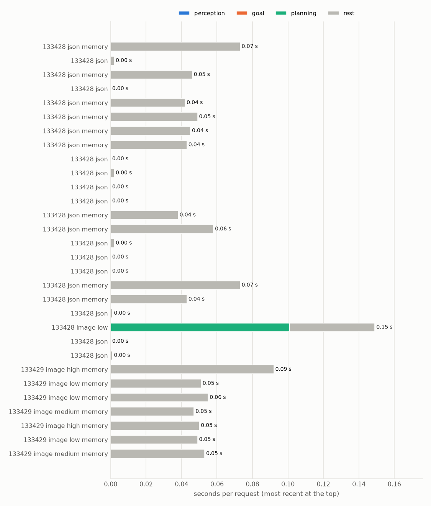
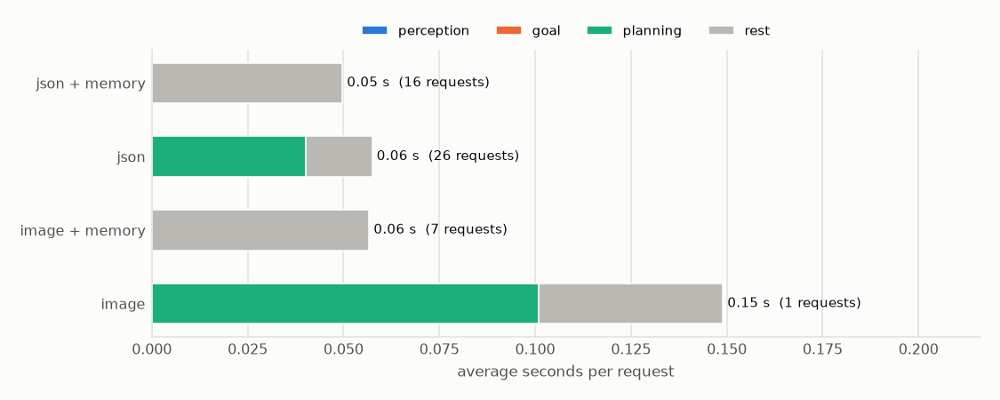
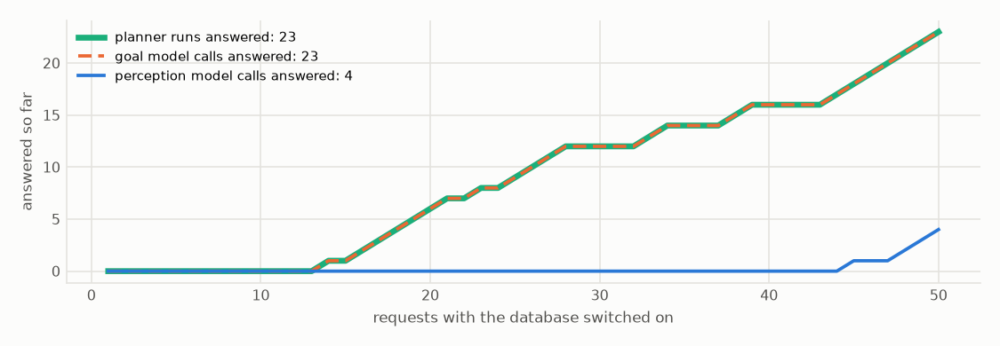
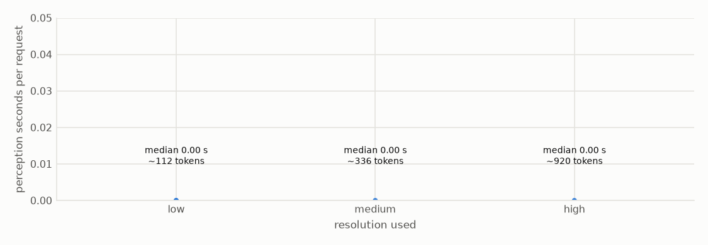
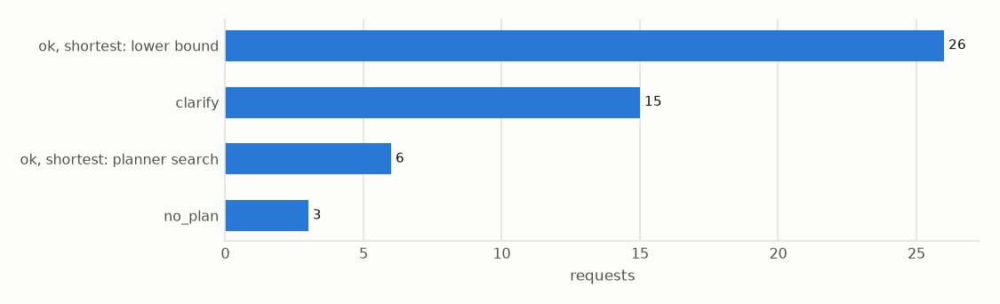

| requests | 50 |
|---|---|
| ok | 32 |
| median total | 0.04 s |
| 95th percentile | 0.15 s |
| model | mock |
| database on | 50 requests |
| answered from the database | perception 4, goal 23, plan 23 |
Blue perception (image to scene), orange goal (instruction to goal), green planning, grey everything else. Labels: time of the request, path, resolution, and whether the database answered.


Each answered perception or goal call is one model call that did not run.

Perception time of image requests, by the resolution that was finally used.

